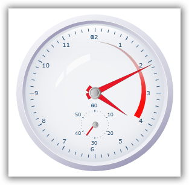
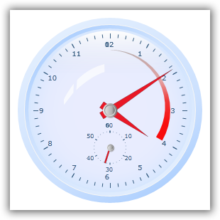
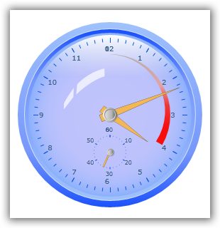
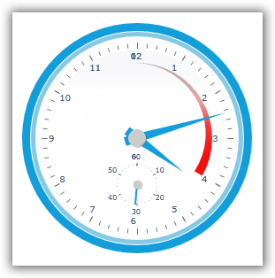
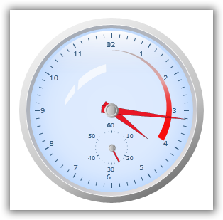
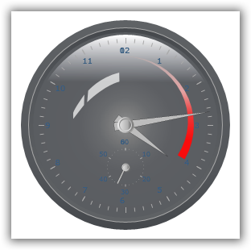
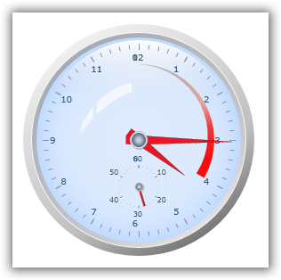

This feature enables the user to customize the appearance of the Silverlight gauges with the predefined styles. This is useful for enriching the user experience and provides a good look and feel. In the previous implementation, these predefined styles could be applied only with the help of Shared.Silverlight.dll and the respective theming DLLs from the sample side.
· All the styles available in Shared.Silverlight.DLL have been implemented, so all the themes can be applied.
· This can be applied for all gauges, namely circular gauge, linear gauge, digital gauge, and rolling gauge.
· This style can be applied by setting the corresponding styles to the VisualStyle property of all gauges.
· The following styles are supported for all gauges.
o Default
o Blend
o Office 2007 Silver
o Office 2007 Blue
o Office 2007 Black
o Office 2003
o Metro
o VS2010
Use Case Scenarios
When the user needs to enrich the appearance of the gauge, they can use this feature. This feature is can be used to differentiate (highlight) the Gauges, when the user having more gauges in a single application.
Properties
|
Property |
Description |
Type |
Data Type |
|
GaugeVisualStyle |
Gets the list of styles to be applied. |
Enum |
Binary, True/False |
|
VisualStyle |
Sets the visual style of all gauges. |
DependencyProperty |
GaugeVisualStyles.Blend, GaugeVisualStyles.VS2010, GaugeVisualStyles.Metro, GaugeVisualStyles.Office2003, GaugeVisualStyles.Office2007Blue, GaugeVisualStyles.Office2007Black, GaugeVisualStyles.Office2007Silver |
|
[XAML] <syncfusion:CircularGauge x:Name="CircularGauge1" Radius="130" Margin="5" VisualStyle="VS2010"> <syncfusion:CircularGauge.Scales> <syncfusion:CircularScale/> </syncfusion:CircularGauge.Scales> </syncfusion:CircularGauge>
|
|
[C#] CircularGauge gauge1 = new CircularGauge(); gauge1.VisualStyle = GaugeVisualStyle.VS2010;
|

Figure 58: Office2007Silver

Figure 59: Office2007Blue
Figure 60: Office2007Black

Figure 61: Office2003

Figure 62: Metro

Figure 63: Default

Figure 64: Blend

Figure 65: VS2010